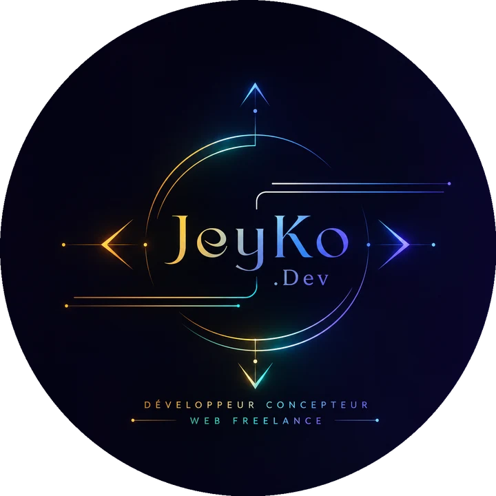

Passion du détail
Chaque pixel et chaque ligne de code comptent, pour des interfaces qui fonctionnent parfaitement.
Je suis Jean Volcy, développeur web & mobile à Tours. J’ai créé Jeyko.dev en 2025 pour accompagner les indépendants, les associations et les marques, de l’idée jusqu’à la mise en ligne.

« Le code n’est pas une fin en soi, mais un moyen de créer des expériences qui facilitent la vie des utilisateurs. »
Chaque pixel et chaque ligne de code comptent, pour des interfaces qui fonctionnent parfaitement.
Des technologies modernes et éprouvées, choisies pour durer et évoluer avec votre activité.
Une communication claire à chaque étape : vous savez toujours où en est votre projet.
Formation à l’ESECADE (janvier 2023 – mars 2024), titre RNCP niveau 5 (bac +2) : front-end, back-end et applications mobiles.
Lancement de mon activité de développeur web & mobile indépendant à Tours.
Co-fondateur et vice-président de l’association culturelle afro-caribéenne, dont je conçois aussi le site.
Planora, Ebenora Beauty, SferaLuna, Boxing Club Tours… des SaaS, des e-shops et des apps iOS publiées.
Un appel gratuit de 30 min pour comprendre votre vision et définir le périmètre.
Une proposition détaillée sous 48 h : plan technique, planning et budget clairs.
Des livraisons régulières sur un lien de test pour suivre chaque avancée.
Mise en ligne soignée, prise en main et support après le lancement.
Des technologies modernes et fiables, choisies selon votre projet.
Consultation gratuite de 30 minutes pour cadrer votre projet. Réponse sous 24 h ouvrées.
Démarrer un projet